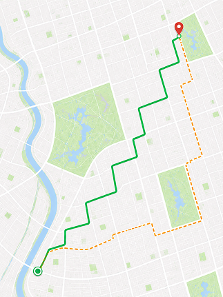

Gira a la derecha en
Av. Primavera

Ruta Rápida
8 minRuta Alternativa
9 minNodos Seguros
Establecimientos donde puedes refugiarte
Incidentes
4 incidentes cercanos en tu ruta

Ruta Rápida
8 minRuta Alternativa
9 minEstablecimientos donde puedes refugiarte
4 incidentes cercanos en tu ruta